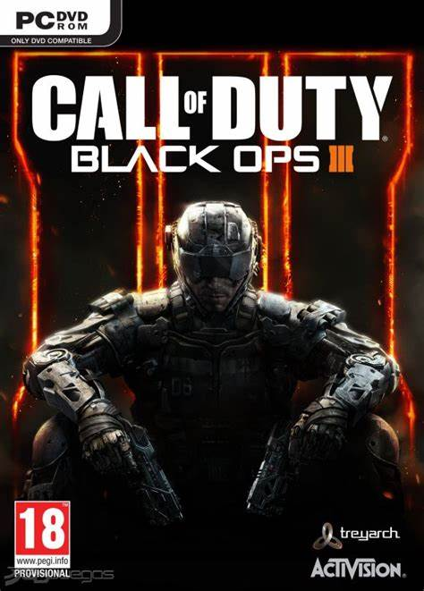

Call Of Duty Black Ops 3
Acerca de:
Call of Duty: Black Ops III representa la tercera entrega principal de la subsaga "Black Ops" dentro de la franquicia Call of Duty, desarrollada por Treyarch. Fue lanzado en 2015 y buscó llevar la serie a un futuro distópico y tecnológicamente avanzado, ofreciendo una experiencia completa que abarcaba una campaña narrativa, un robusto modo multijugador y el popular modo Zombis, cada uno con su propio enfoque y elementos distintivos.
Historia y Ambientación
Black Ops III se ambienta en el año 2065, aproximadamente 40 años después de los eventos de Black Ops II. El mundo ha cambiado drásticamente debido a los efectos del cambio climático y una dependencia cada vez mayor de la tecnología, lo que ha escalado a una nueva y compleja Guerra Fría entre facciones. En este futuro, la tecnología militar ha avanzado exponencialmente, con soldados mejorados cibernéticamente y una red global de datos y comunicación conocida como el Direct Neural Interface (DNI).
Características Clave
-Campaña para un jugador con cooperativo para 4 jugadores.
-Multijugador dinámico con un nuevo sistema de movimiento basado en especialistas.
-Modo Zombis con una historia independiente y mapas complejos.
-Amplias opciones de personalización para el personaje y las armas.
-Contenido descargable posterior al lanzamiento, incluyendo mapas multijugador y de Zombis, que expandieron significativamente la experiencia.
-Ambientación futurista que explora el transhumanismo y la guerra cibernética.
Jugabilidad:
Black Ops III se esforzó por innovar en varios aspectos de su jugabilidad:
- Campaña para un Jugador (y Cooperativa): Por primera vez en la serie Black Ops, la campaña podía jugarse de forma cooperativa con hasta cuatro jugadores, lo que añadía una dimensión estratégica y de trabajo en equipo. Los jugadores podían personalizar a su personaje y elegir entre una variedad de habilidades cibernéticas que influían en el combate y la exploración.
-Modo Multijugador: El multijugador fue un foco principal y muy innovador para su época. Introdujo un nuevo "sistema de movimiento basado en especialistas", que permitía a los jugadores correr por las paredes, deslizarse (con una suerte de propulsores) y encadenar movimientos de manera fluida. Esto añadió una capa de verticalidad y estrategia al combate.
-Especialistas: Los jugadores podían elegir entre varios "Especialistas", personajes únicos con sus propias armas y habilidades especiales, que se cargaban durante la partida, permitiendo momentos clave que podían cambiar el rumbo de un enfrentamiento.
-Gunsmith: Un sistema de personalización de armas profundizado que permitía a los jugadores modificar sus armas de manera más visual y funcional.
-Modo Zombis: El popular modo Zombis regresó con una historia independiente y sus propios personajes y mapas. En Black Ops III, el modo Zombis fue el más ambicioso hasta la fecha, con mapas más grandes, tramas intrincadas (a menudo con elementos de "easter eggs" y secretos complejos), y un enfoque en personajes con trasfondos oscuros. Este modo es uno de los favoritos de los fans por su jugabilidad desafiante y su narrativa oculta.